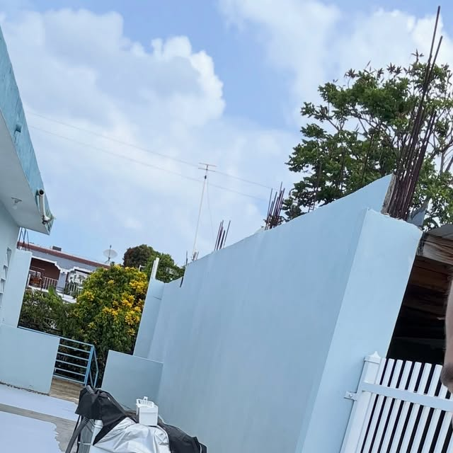
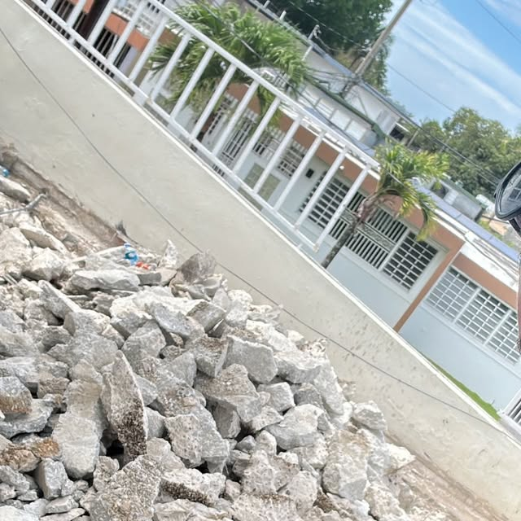
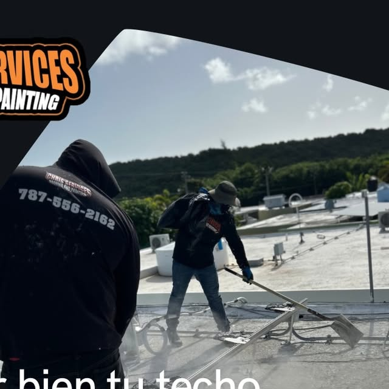
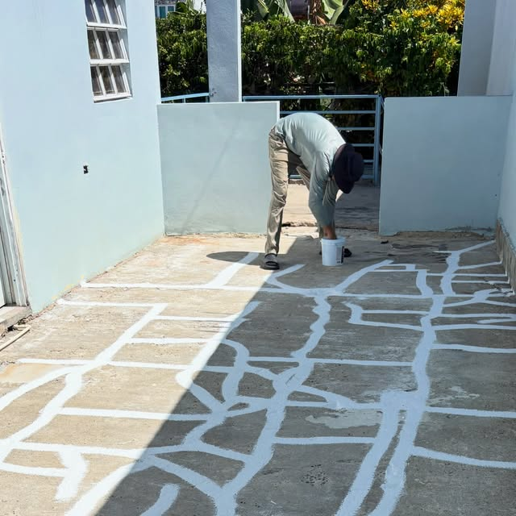
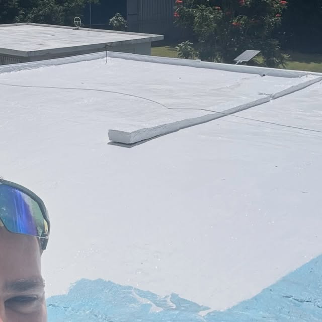

Área metro (Río Piedras) · Puerto Rico
SILICONA 100% QUE NO DA BREAK
Sellado con silicona 100 por ciento y corrección del techo desde el concreto, en el área metro.
Área metro (Río Piedras) · Puerto Rico
Sellado con silicona 100 por ciento y corrección del techo desde el concreto, en el área metro.
Lo que hacemos

Máxima protección e impermeabilización con silicona de grado profesional.

Reparamos el techo desde su base para un sellado que dura.

Identificamos y corregimos grietas antes de aplicar el producto.

Mejoramos el drenaje del techo para evitar agua acumulada.

Limpieza a presión para preparar la superficie del techo.

Removemos material viejo y deteriorado antes del sellado.
Galería





Quiénes somos
Chris Service's: sellado con silicona 100 por ciento en el área metro de Puerto Rico. Corregimos el techo desde el concreto, reparamos grietas, corregimos desagües y empozamientos, y dejamos el techo listo para años.
Llamar 787-556-2162Preguntas frecuentes
Estamos en Área metro (Río Piedras), Puerto Rico.
Sellado con silicona 100 por ciento y más: Sellado silicona 100 por ciento, Corrección desde el concreto, Reparación de grietas.
Escríbenos por WhatsApp al 787-556-2162 o llena el formulario de contacto y te respondemos por WhatsApp.
Sí, síguenos en Instagram como @chrisservicespr.
Sí, sellado con silicona 100% y corrección del techo desde el concreto. Área metro: 787-556-2162.
Silicona 100% que fluye donde tú no ves
Sellado con silicona 100 por ciento · @chrisservicespr · Área metro (Río Piedras) y área metro